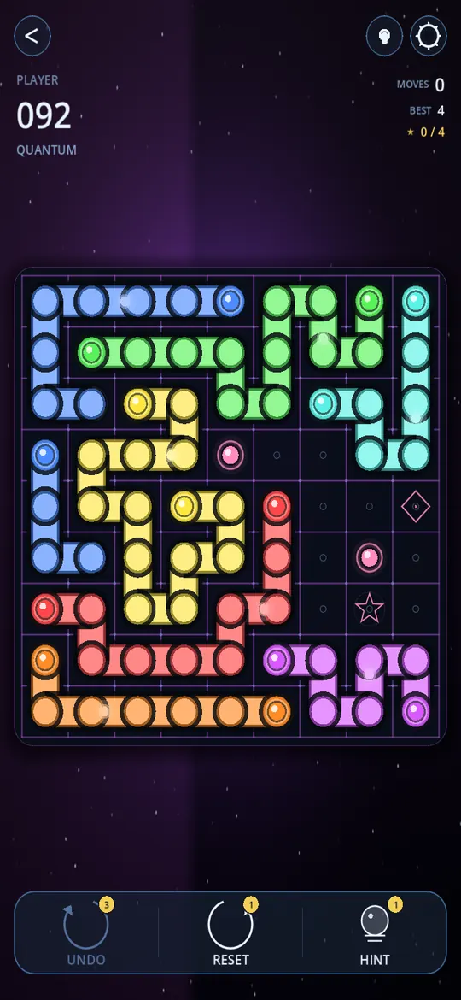

Each mode twists the same core idea — connect every pair — into a completely different experience.
The hero mode. 100 handcrafted levels across 10 sectors — each sector introduces one new mechanic.

Pure Flow-style puzzles. No mechanics. No surprises. Just you, colored pairs, and connecting them.
One-way arrows add a logical twist. Each diode forces the path to flow in a specific direction. Think before you draw.
Linked portal pairs teleport your path across the grid. Think of it as two boards at once connected through colorful warps.
The gauntlet. All mechanics stacked — stars, diodes, checkpoints, portals, fill-every-cell. 100 escalating puzzles for players who've mastered the basics.
Procedurally-generated puzzles that never end. Pick a board size from 5×5 to 9×9 and chain unlimited solves.
A random sector 8-9 puzzle on tap. Taste of late-campaign difficulty without needing to unlock it. Great for a quick brain-stretch.
On top of the 500+ campaign levels, there's always something new.
A new 6×6 puzzle every day, globally seeded — same board for everyone, everywhere. Compare times with friends.
Six fresh puzzles per week unlocking Monday through Saturday — progressively harder from warm-up to expert.
60-second sprint. Solve as many random 5×5 puzzles as you can. BEST TODAY + ALL-TIME record tracked.
Compete globally on Daily Challenge speed, Time Trial score, and Endless streak via Google Play Games Services.
500+ handcrafted puzzles across 7 modes. All free on Google Play.